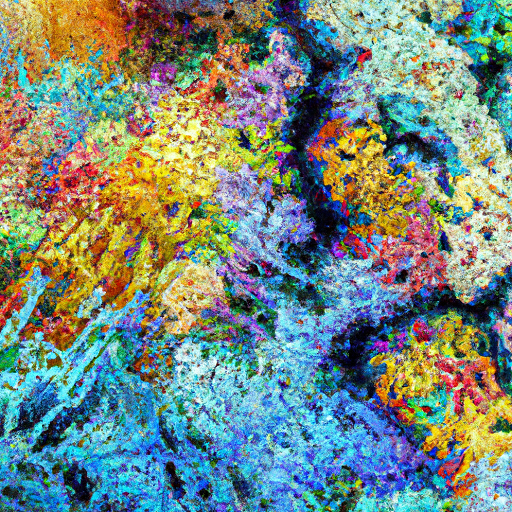
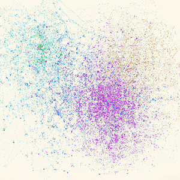
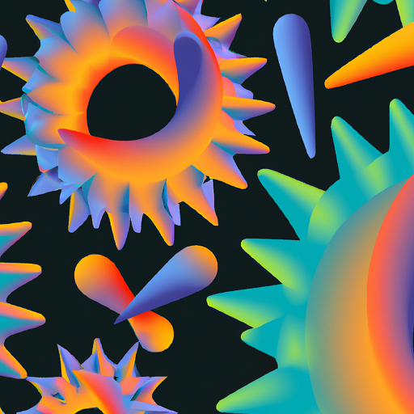

Publications
*Equal contribution. †Co-corresponding author.
2025
Genome modeling and design across all domains of life with Evo 2
bioRxiv (2025)
Sidechain conditioning and modeling for full-atom protein sequence design with FAMPNN
International Conference on Machine Learning (2025)
Utilizing machine learning to improve neutralization potency of an HIV-1 antibody targeting the gp41 N-heptad repeat
ACS Chemical Biology (2025)
Systems and algorithms for convolutional multi-hybrid language models at scale
arXiv (2025)
2024
Semantic mining of functional de novo genes from a genomic language model
bioRxiv (2024)
Sequence modeling and design from molecular to genome scale with Evo
Science (2024)
Unsupervised evolution of protein and antibody complexes with a structure-informed language model
Science (2024)
Scanorama: Integrating large and diverse single-cell transcriptomic datasets
Nature Protocols (2024)

Mechanistic design and scaling of hybrid architectures
International Conference on Machine Learning (2024)
BHLHE40 regulates myeloid cell polarization through IL-10-dependent and -independent mechanisms
Journal of Immunology (2024)
Generative artificial intelligence for de novo protein design
Current Opinion in Structural Biology (2024)
2023

Efficient evolution of human antibodies from general protein language models
Nature Biotechnology (2023)

Evolutionary-scale prediction of atomic-level protein structure with a language model
Science (2023)
Machine learning for protein engineering
Machine Learning in Molecular Sciences (2023)
2022

A high-level programming language for generative protein design
bioRxiv (2022)
Evolutionary velocity with protein language models predicts evolutionary dynamics of diverse proteins
Cell Systems (2022)
Learning inverse folding from millions of predicted structures
International Conference on Machine Learning (2022)

Predicting the mutational drivers of future SARS-CoV-2 variants of concern
Science Translational Medicine (2022)

Adaptive machine learning for protein engineering
Current Opinion in Structural Biology (2022)
2021
Algorithms for understanding and fighting infectious disease
Massachusetts Institute of Technology, Doctoral Thesis (2021)
Schema: Metric learning enables interpretable synthesis of heterogeneous single-cell modalities
Genome Biology (2021)

Learning the language of viral evolution and escape
Science (2021)
2020
Leveraging uncertainty in machine learning accelerates biological discovery and design
Cell Systems (2020)
Computational methods for single-cell RNA sequencing
Annual Review of Biomedical Data Science (2020)
2019
Geometric sketching compactly summarizes the single-cell transcriptomic landscape
Cell Systems (2019)
Efficient integration of heterogeneous single-cell transcriptomes using Scanorama
Nature Biotechnology (2019)
Fine-mapping cis-regulatory variants in diverse human populations
eLife (2019)
2018
Realizing private and practical pharmacological collaboration
Science (2018)
2016
Pooled ChIP-seq links variation in transcription factor binding to complex disease risk
Cell (2016)